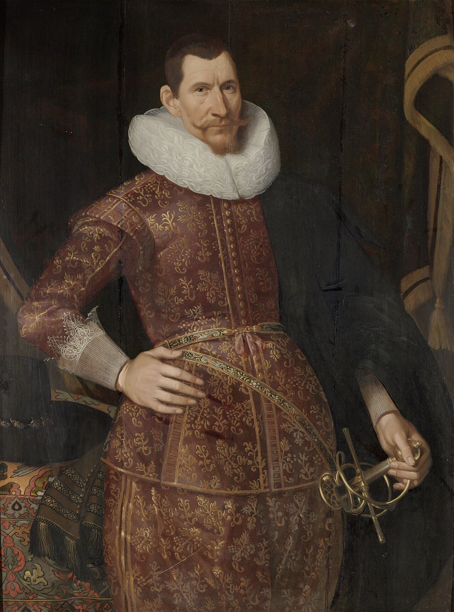

Jan Pieterszoon Coen
Gouverneur-Generaal van Nederlands-Indië
Eerste Termijn 1619–1623 · Tweede Termijn 1627–1629
Stichter van Batavia · Architect van het VOC-imperium · Omstreden figuur van de Gouden Eeuw
Portret toegeschreven aan Jacob Waben, ca. 1620 — Rijksmuseum Amsterdam
Jan Pieterszoon Coen was één van de meest invloedrijke — en meest omstreden — figuren uit de Nederlandse geschiedenis. Als Gouverneur-Generaal van de Vereenigde Oostindische Compagnie legde hij in de vroege zeventiende eeuw de grondvesten van het Nederlandse koloniale rijk in Azië. Zijn nalatenschap is diep ambivalent: een doelmatig organisator en strategisch denker, maar ook een man die geweld als beleidsinstrument gebruikte op een schaal die zelfs zijn tijdgenoten soms deed huiveren.
Coen groeide op in de bloeiende havenstad Hoorn, studeerde handel in Rome en klom snel op binnen de VOC-hiërarchie. Zijn definitieve machtsbasis — de stad Batavia, gebouwd op de ruïnes van het veroverde Jayakarta — zou drie eeuwen lang het centrum van het Nederlandse Oost-Indische bestuur blijven. Zijn naam staat voor de opbouw van een handelskeizerrijk, maar evenzeer voor de brute onderwerping van de Banda-eilanden in 1621, waarbij een gehele bevolkingsgroep van circa 15.000 mensen vrijwel werd vernietigd.
Deze website belicht zijn leven en erfenis vanuit meerdere perspectieven: als historisch subject, als spiegel van zijn tijd, en als brandpunt van een hedendaags debat over hoe Nederland zijn koloniale verleden herdenkt. Geschiedenis heeft pas diepgang als we bereid zijn haar volledig te aanschouwen.
Er kan in Azien geen handel gedreven worden sonder oorlog,— Jan Pieterszoon Coen, brief aan de Heren XVII, 1614
noch oorlog sonder handel.
Biografie
Van koopmanszoon in Hoorn tot machtigste man van Azië — zijn leven stap voor stap.
VOC & Context
De Gouden Eeuw, de specerijenhandel en de wereld waarin Coen opereerde.
Banda 1621
De verovering van de Banda-eilanden en de vrijwel volledige vernietiging van haar bevolking.
Erfenis & Debat
Hoe wordt Coen herdacht? Het debat over zijn standbeeld en de koloniale erfenis.
Biografie
Het leven van Jan Pieterszoon Coen beslaat slechts 41 jaar, maar zijn invloed op de Aziatische geschiedenis reikt eeuwen verder. Uit een welgesteld koopmansgezin in Hoorn klom hij op tot de machtigste man van de VOC in Azië — een positie die hij invulde met briljante organisatorische gave én meedogenloze vastberadenheid.
Hoorn — Een Kind van de Gouden Eeuw (1587–1607)
Jan Pieterszoon Coen werd geboren op 8 januari 1587 in Hoorn, een welvarende handelsstad aan de Zuiderzee in Noord-Holland. Zijn vader, Pieter Janszoon Coen, was een gerespecteerd koopman; zijn moeder Maertje Cornelisdochter Macker kwam uit een bekende Hoornse familie. De stad zelf was in dit tijdperk op haar hoogtepunt: Hoorn was een van de zes steden die de VOC-kamer mede hadden opgericht, en haar havens stroomden vol met schepen die naar alle windrichtingen voeren.
Als tiener vertrok Coen naar Rome, waar hij in de leer ging bij het Italiaanse handelshuis van Paschalius Nanning. Dit was niet ongebruikelijk voor zonen uit handelsfamilies: men leerde boekhouden in de dubbele Italiaanse boekhoudmethode, handelsrecht, wisselkunde en meerdere talen. Coen was een ijverige leerling. Hij leerde Italiaans, verbeterde zijn Latijn en ontwikkelde de administratieve en analytische vaardigheden die zijn verdere loopbaan zouden kenmerken.
Naar de Oost — Eerste Ervaringen (1607–1614)
In 1607, twintig jaar oud, keerde Coen terug naar Nederland en trad in dienst bij de VOC. Zijn eerste reis naar de Oost-Indische archipel vond plaats in 1607–1610. Hij voer als assistent mee, verbleef in Bantam op het westelijke Java en leerde de complexe handels- en politieke verhoudingen in de archipel van binnenuit kennen.
Tijdens zijn tweede reis (1612–1618) maakte hij een spectaculaire opmars door de VOC-hiërarchie. Hij werkte achtereenvolgens als accountant in Bantam, hoofdkoopman en directeur van kantoren in Bantam en Ambon. Zijn gedetailleerde rapporten aan de Heren XVII — de zeventien bewindvoerders van de VOC — vielen op door hun analytische scherpte en hun ambitieuze visie op wat de compagnie kon bereiken.
"Uw Edelen kunnen seker wesen, dat het Land van India seer rijck is van specerijen, fijn gout, diamanten, sijde, en meer andere kostelijcke waren."
— Coen, rapport aan de Heren XVII, ca. 1613Het Discours — Een Visie voor een Imperium (1614)
In 1614 schreef Coen zijn beroemde Discours aen d'Ed. Heeren Bewinthebberen toucherende den Nederlandtsche Indischen staet — een memorandum waarin hij een gedetailleerd plan ontvouwde voor de vestiging van een permanent Nederlands handelsimperium in Azië. Dit document is een sleuteltekst in de Nederlandse koloniale geschiedenis.
Coens visie was radicaal en pragmatisch tegelijk: hij pleitte voor een centrale, versterkte handelshaven (een rendezvous), een stelsel van interaziatische handel waarbij de VOC zelf winst maakte op routes tussen Aziatische havens, en — cruciaal — de bereidheid militaire macht in te zetten om handelsposities te handhaven.
"Er kan in Azien geen handel gedreven worden sonder oorlog, noch oorlog sonder handel. Beyde moeten malcanderen stijven ende onderhouden."
(Er kan in Azië geen handel worden gedreven zonder oorlog, noch oorlog zonder handel. Beide moeten elkaar steunen en onderhouden.)
Gouverneur-Generaal — Eerste Termijn (1619–1623)
Op 27 oktober 1617 werd Coen benoemd tot Directeur-Generaal van de VOC in Azië. Op 31 mei 1619 volgde zijn benoeming tot Gouverneur-Generaal, nadat hij Batavia al had gesticht.
In mei 1619 had Coen de stad Jayakarta — gelegen op de plek van het huidige Jakarta — met geweld veroverd en platgebrand. Op de ruïnes verrees Batavia, een strak geplande koloniale stad met grachten, bastions en een handelscentrum. Het moest het "Amsterdam van Azië" worden, en dat zou het — op zijn eigen manier — ook worden.
In de jaren die volgden stuurde Coen expedities uit naar de Molukken, versterkte hij de VOC-positie tegenover de Engelse East India Company, en leidde hij de veroveringscampagne van de Banda-eilanden in 1621 — het meest beladen hoofdstuk uit zijn carrière.
"Dispereert niet, spaart uw vijanden niet, want God is met ons."
(Wanhoop niet, spaart uw vijanden niet, want God is met ons.)
Het werkwoord despereren — wanhopen, de moed opgeven — was voor Coen het grootste kwaad. In zijn brieven en bevelen keerde de aansporing steeds terug: doorzetten, niet twijfelen, niet terugdeinzen. De lijfspreuk vatte zijn karakter samen. Ze was tegelijk religieuze overtuiging (God is met ons), militaire aanvuring, en persoonlijke levensfilosofie.
Dat deze spreuk ook de naam van het domein van deze website is, is bewust: dispereertniet.nl wil niet wanhopen aan moeilijke geschiedenis — maar haar evenmin ontwijken. Coens eigen woorden als herinnering dat ook het omgaan met zijn erfenis vastberadenheid vereist.

Eva Ment — Liefde in de Tropen (1621–1629)
In 1621 werd de zestienjarige Eva Ment als pupil aan Coen toevertrouwd door haar vader Laurens Ment, een VOC-bewindhebber. Eva werd naar Batavia gestuurd om daar met Coen te trouwen — een zakelijk arrangement dat in de koloniale wereld niet ongebruikelijk was. Ze trouwden in 1625, tijdens Coens verblijf in Nederland.
Hun relatie was gecompliceerd door de hardheid van het koloniale leven en door een pijnlijk schandaal: voor hun huwelijk beschuldigde Coen Eva van ontrouw. Hij liet haar opsluiten — een aanklacht die ze stellig ontkende en die historici nooit volledig hebben kunnen ontwarren. Het incident onthult iets van Coens karakter: zijn behoefte aan controle, zijn intense trots, en zijn neiging tot extreme maatregelen ook in zijn persoonlijk leven. Na hun huwelijk reisden ze samen naar Batavia voor zijn tweede termijn. Eva overleefde hem en keerde na zijn dood terug naar Nederland.
Tweede Termijn en Dood (1627–1629)
Na zijn eerste termijn keerde Coen in 1623 terug naar Nederland, rijker en gelauwerd. Maar de VOC had hem nog nodig. In 1627 voer hij opnieuw uit naar Batavia, nu met Eva als zijn wettige echtgenote.
Zijn tweede termijn was minder triomfantelijk. De sultan van Mataram, Agung, belegerde Batavia tweemaal — in 1628 en 1629. De VOC-stad hield stand, maar de spanning was enorm. Vlak na het aflopen van het tweede beleg, op 21 september 1629, stierf Coen plotseling aan dysenterie in zijn eigen stad. Hij was 41 jaar oud. Hij werd begraven in de Hollandse Kerk van Batavia. Zijn graf is niet bewaard gebleven — de kerk werd in de negentiende eeuw afgebroken.
Karakter & Methoden
Coens rapporten en brieven getuigen van een uitzonderlijk analytisch vermogen. Hij begreep handelsstromen, politieke verhoudingen en logistiek op een wijze die zijn tijdgenoten oversteeg.
Waar anderen aarzelden, handelde Coen. Hij zag geweld als een legitiem middel voor een zakelijk doel — niet uit sadisme, maar uit koele berekening.
Coen was Calvinist en zag zijn werk mede als Gods bestel. Zijn brieven zijn doordrenkt van religieuze taal — maar God diende zijn imperiumproject, niet andersom.
Zelfs de Heren XVII vonden zijn methoden soms te ver gaan. Zijn voorganger Laurens Reael had bewust afgezien van massaal geweld op de Banda-eilanden — Coen maakte andere keuzes.
VOC & Historische Context
Om Coen te begrijpen, moet men de wereld begrijpen waarin hij leefde: een tijdperk van Europese expansie, globalisering avant la lettre, en een nieuw soort handelskapitalisme dat voor het eerst in de geschiedenis multinationale ondernemingen creëerde die gewapende macht bezaten.
Nederland in de Gouden Eeuw
Het Nederland van Coens tijd was een jonge republiek in de greep van haar economische hoogtepunt. De Tachtigjarige Oorlog (1568–1648) tegen Spanje woedde nog, maar had paradoxaal genoeg de Nederlandse handelsenergie aangewakkerd: de val van Antwerpen in 1585 had de handelselite naar Amsterdam gedreven, en de stad groeide uit tot de financiële hoofdstad van de wereld.
Amsterdam was het centrum van een globale handelscultuur: bankiers, verzekeraars, cartografen, scheepsbouwers en kooplieden uit heel Europa. De uitvinding van de aandelenbeurs, het wisselkantoor (Wisselbank) en de zeeverzekering maakten Amsterdam tot de eerste moderne financiële metropool. Het was in deze omgeving dat de VOC kon worden gefinancierd door duizenden kleine en grote aandeelhouders.
De VOC — Eerste Multinationale ter Wereld
De Vereenigde Oostindische Compagnie (VOC), opgericht in 1602 door een fusie van zes regionale voorcompagnieën, was een revolutionaire organisatie. Ze bezat het recht een eigen leger en vloot te onderhouden — ze kon oorlog voeren in eigen naam — het recht verdragen te sluiten met buitenlandse mogendheden, het recht forten te bouwen en gebieden te besturen, en een monopolie op de Aziatische handel vanuit de Republiek.
De VOC was dus niet zomaar een handelsbedrijf — ze was een quasi-staatsmacht met commerciële prikkels. Dit maakte figuren als Coen zowel mogelijk als gevaarlijk: een man met de bevoegdheden van een generaal én de mentaliteit van een handelsmanager, opererende op duizenden kilometers van zijn opdrachtgevers.
De Heren XVII
De VOC werd bestuurd door zeventien bewindhebbers, de zogeheten Heren XVII, afkomstig uit zes kamers verspreid over Nederland. Zij benoemden de Gouverneur-Generaal en bepaalden het grote beleid — maar door de communicatietijden van maanden tot een jaar hadden hun representanten in Azië enorme feitelijke autonomie. Coen maakte dankbaar gebruik van dit vacuüm.
De Specerijhandel — De Bron van Alles
Peper, nootmuskaat, foelie en kruidnagel waren het "zwarte goud" van de zeventiende eeuw. Nootmuskaat — uitsluitend afkomstig van de Banda-eilanden — was zo waardevol dat een zakje ervan een huis in Amsterdam kon kopen. Europa's behoefte aan specerijen was enorm: ze dienden als conserveringsmiddelen, medicinale middelen en statussymbolen voor de rijken.
Portugal had al een eeuw lang de specerijenhandel gedomineerd via de Kaap de Goede Hoop. De Nederlandse en Engelse ondernemingen probeerden dit monopolie te doorbreken — en de enige manier om dat duurzaam te doen, redeneerde Coen, was door zelf monopolies te vestigen bij de bron. Dit was de logica achter Banda.
Azië voor de Europese Komst
De archipel die wij nu Indonesië noemen was in de vroege zeventiende eeuw verre van een lege politieke ruimte. Het was een wereld van bloeiende koninkrijken, sultanaten en handelscentra met eigen politieke tradities en uitgebreide handelsnetwerken die tot China, India en het Arabische schiereiland reikten:
- Het sultanaat Bantam (West-Java) was een machtig handelscentrum dat internationale kooplieden aantrok
- Het sultanaat Mataram (Midden-Java) was de dominante landmacht op Java
- De Banda-eilanden hadden een eigen handelselite — de orang kaya — die zelfstandig handelde met Javanen, Maleisiërs en Arabieren
- Makassar was een grote vrijhaven die bewust geen Europees monopolie toeliet
- Het Mogolrijk en de Chinese keizerrijken waren de economische supermachten van de regio
Coen stapte binnen in een wereld die haar eigen logica had — en hij was vastbesloten die logica te herstructureren naar VOC-belangen. Dat dit de vernietiging van bestaande politieke en sociale structuren vereiste, was voor hem een operationele kwestie, geen morele.
Rivaliteit in Azië — Nederland vs. Engeland
De VOC opereerde niet in een vacuüm. De Engelse East India Company (gesticht in 1600, twee jaar voor de VOC) was haar directe concurrent om de specerijroutes. Aanvankelijk probeerden beide compagnieën samen te werken — het Akkoord van Defensie van 1619 — maar de samenwerking mislukte door wederzijds wantrouwen.
De spanning culmineerde in 1623 in de Amboyna-massacre: VOC-functionarissen executeerden twintig Engelse en Japanse kooplieden op het eiland Ambon wegens een vermeende samenzwering. De episode vergiftigde de Engels-Nederlandse betrekkingen voor decennia. Coen verliet Azië vlak voor de executies, maar zijn agressieve anti-Engelse politiek had het klimaat gecreëerd.
Tijdlijn
Een chronologisch overzicht van het leven van Jan Pieterszoon Coen en de sleutelmomenten van zijn tijd.
Geboorte in Hoorn
Jan Pieterszoon Coen wordt geboren in Hoorn, Noord-Holland, als zoon van koopman Pieter Janszoon Coen. Hoorn is op dit moment een van de welvarendste handelssteden van de Republiek der Zeven Verenigde Nederlanden.
Opleiding in Rome
Coen leert het handelsvak bij het Italiaanse handelshuis van Paschalius Nanning in Rome. Hij verwerft kennis van Italiaans boekhouden, handelsrecht en internationale koopmanspraktijk.
Oprichting VOC
De Staten-Generaal verlenen een octrooi aan de Vereenigde Oostindische Compagnie — de eerste naamloze vennootschap ter wereld op schaal. Coen is vijftien jaar oud en groeit op in een wereld die door de VOC wordt gevormd.
Eerste Reis naar Azië
Coen vaart als assistent naar Bantam en de Banda-eilanden. Zijn eerste kennismaking met de Aziatische handelspolitiek en het VOC-apparaat.
Het Discours
Coen schrijft zijn beroemde Discours aan de Heren XVII — een strategisch memorandum voor de vestiging van een Nederlands handelsimperium in Azië. Het document schetst het gebruik van geweld als handelsbeleid en is zijn intellectuele nalatenschap.
Directeur-Generaal
Benoeming tot Directeur-Generaal van de VOC in Azië — de op één na hoogste positie in de organisatie.
Stichting van Batavia
Coen verovert en brandt Jayakarta plat, en bouwt op de ruïnes de stad Batavia — een strak geplande VOC-handelsmetropool met Amsterdamse grachten. Batavia wordt de hoofdstad van Nederlands-Indië en heet nu Jakarta.
Benoeming Gouverneur-Generaal
Officieel benoemd tot Gouverneur-Generaal van Nederlands-Indië. Begin van zijn eerste termijn.
De Banda-Campagne ⚔
Coen leidt een militaire expeditie naar de Banda-eilanden. De inheemse bevolking van circa 15.000 mensen wordt vrijwel geheel vernietigd: gedood, gevlucht of tot slaaf gemaakt. De eilanden worden herpeupleerd met Nederlandse perkeniers en tot slaaf gemaakte arbeiders. Het VOC-nootmuskaatmonopolie is gevestigd.
Amboyna & Vertrek
Kort voor zijn vertrek worden op Ambon twintig Engelse en Japanse kooplieden geëxecuteerd wegens vermeende samenzwering — de "Amboyna-massacre", die de Engels-Nederlandse betrekkingen langdurig vergiftigt. Coen keert terug naar Nederland.
Huwelijk met Eva Ment
Coen trouwt in Nederland met Eva Ment, dochter van VOC-bewindhebber Laurens Ment. Ze zullen samen terugkeren naar Batavia voor zijn tweede termijn.
Beleg van Batavia
Sultan Agung van Mataram belegert Batavia tweemaal. De stad houdt stand, maar honger en ziekte teisteren de bevolking. Coen leidt de verdediging.
Overlijden in Batavia
Coen sterft in Batavia aan dysenterie, vlak na het aflopen van het tweede beleg. Hij is 41 jaar oud. Hij ligt begraven in de Hollandse Kerk van Batavia — zijn graf is niet bewaard gebleven.
Kaart — Coens Wereld
Een interactieve kaart van de plaatsen en reizen die het leven van Jan Pieterszoon Coen bepaalden: van zijn geboorteplaats Hoorn tot de verre Banda-archipel. De gestippelde lijn toont de VOC-handelsroute via de Kaap de Goede Hoop.
Klik op een marker voor historische informatie. Scrollen en zoomen ingeschakeld.
Banda 1621 — De Vergeten Genocide
Dit hoofdstuk beschrijft de militaire campagne op de Banda-eilanden in 1621, waarbij een groot deel van de inheemse bevolking om het leven kwam, werd gedwongen te vluchten of tot slaafgemaakten werden. Het is een van de donkerste episodes uit de Nederlandse koloniale geschiedenis — en een die Coen bewust en systematisch uitvoerde.
De Banda-eilanden, een kleine archipel in de Banda Zee (Molukken), waren de enige plek ter wereld waar nootmuskaat en foelie groeiden. Voor de VOC vertegenwoordigden ze een monopolie van astronomische waarde. Voor de Bandanese bevolking waren het hun thuis — en het zou hun bijna-totale ondergang worden.
De Banda-Eilanden voor 1621
De Banda-archipel bestond uit tien kleine eilanden met een totale bevolking van naar schatting 15.000 mensen. De Bandanezen waren geen onderworpen volk: ze waren zelfstandige handelaren met een goed ontwikkeld politiek systeem. Lokale leiders, de orang kaya ("rijke mensen"), bestuurden de eilanden en handelden vrij met iedereen — Javanen, Maleisiërs, Arabieren en Europeanen.
De VOC had al eerder getracht een monopolie te vestigen via verdragen. De orang kaya tekenden, maar hielden zich er niet aan: ze bleven nootmuskaat verkopen aan de hoogste bieder. Vanuit hun perspectief was dit hun goed recht als zelfstandige handelaren. Vanuit Coens perspectief was het contractbreuk die militaire actie rechtvaardigde. Dit verschil in perspectief kostte hen bijna hun bestaan.
De Campagne van 1621
In maart 1621 voer Coen persoonlijk naar de Banda-eilanden met een vloot van zestien schepen en circa 1.600 soldaten, aangevuld met Japanse huurlingen. Zijn orders waren eenduidig: onderwerp de eilanden volledig en vestig het VOC-monopolie.
Wat volgde was een systematische militaire campagne van enkele maanden. De Bandanezen, die zich hadden teruggetrokken in de heuvels, werden opgejaagd. De VOC-troepen en Japanse huurlingen maakten daarbij geen onderscheid tussen strijders en burgers. Dorpen werden verbrand, mensen gedood of gevangen genomen. De orang kaya die bereid waren te capituleren werden vermoord nadat ze een vergadering hadden bijgewoond onder schijn van veiligheid — een regelrechte hinderlaag.
"De moordenaers sullen nu haest gestraft zijn. Het is een wreed volk, dat ons alle jaren bedriegt en misleidt. Nu zijn wij hen kwijt."

De Menselijke Tol
De Perkeniers — Een Eiland Op As
Na de campagne waren de Banda-eilanden vrijwel ontvolkt. Coen implementeerde onmiddellijk het perkenstelsel. Nederlandse perkeniers (plantageholders) kregen percelen nootmuskaatbomen toegewezen, die ze moesten bebouwen met tot slaaf gemaakte arbeiders — aangevoerd van andere eilanden in de archipel en van het vasteland van Azië.
Het was een keiharde economische exploitatie: de perkeniers moesten hun oogst uitsluitend verkopen aan de VOC tegen door de VOC vastgestelde (lage) prijzen. Wie niet leverde, riskeerde zijn perceel. De tot slaaf gemaakten hadden geen rechten en werkten in gevaarlijke omstandigheden met een hoge sterfte.
Het systeem was economisch succesvol voor de VOC: het nootmuskaatmonopolie genereerde decennialang enorme winsten voor aandeelhouders in Amsterdam. De Bandanese cultuur, haar taal, haar sociale structuren — vrijwel alles werd vernietigd.
Historisch Debat — Was Dit Genocide?
Historici zijn verdeeld over de classificatie van de Banda-campagne van 1621. Auteurs als Giles Milton (auteur van Nathaniel's Nutmeg) spreken openlijk van genocide of volkerenmoord. Anderen wijzen op het ontbreken van een schriftelijk uitroeiingsbevel en spreken van extreem koloniaal geweld. De terminologische discussie doet echter niets af aan de feiten.
De feiten zijn niet in geschil: een bevolking van circa 15.000 mensen werd in enkele maanden teruggebracht tot circa 1.000. Wie niet gedood werd, vluchtte of werd tot slaaf gemaakt. Geen serieuze historicus ontkent de omvang van de vernietiging.
In 2020 bood de Nederlandse overheid formele excuses aan voor het Nederlandse slavernijverleden. De Banda-campagne maakt deel uit van dit verleden — al is de specifieke erkenning ervan in de publieke herinnering nog altijd fragmentarisch.
"De Banda-moorden zijn waarschijnlijk het eerste geval van bewuste, systematische uitroeiing van een inheemse bevolking in de Aziatische geschiedenis door Europeanen."
— Giles Milton, Nathaniel's Nutmeg (1999)Erfenis & Hedendaags Debat
Vier eeuwen na zijn dood is Jan Pieterszoon Coen een gecontesteerde figuur. In Hoorn staat zijn standbeeld nog steeds op het Roode Steen-plein. In het debat over de Nederlandse koloniale geschiedenis is zijn naam synoniem geworden voor de morele ambiguïteit van de Gouden Eeuw.
Organisatorische Nalatenschap
Coen was een uitzonderlijk organisator. Batavia — zijn schepping — werd het centrum van een Aziatisch handelsnetwerk en bleef dat drie eeuwen lang. Zijn interaziatische handelssysteem, de zogenoemde country trade, was financieel innovatief en effectief. De administratieve structuren die hij vestigde hadden een opmerkelijke duurzaamheid.
Economische Impact op Nederland
De specerijenhandel die Coen veiligstelde genereerde enorme rijkdom voor de Republiek. De VOC-dividenden financierden in Amsterdam grachtenpanden, schilderijen, wetenschappelijke instituten en een bloeiende burgercultuur. De Gouden Eeuw — als cultureel en economisch fenomeen — was mede zijn nalatenschap.
Grondlegger van het Kolonialisme
Coens systeem van militaire macht, handelsdwang en bestuurlijke onderwerping legde de blauwdruk voor drie eeuwen Nederlands kolonialisme in Indonesië. Zijn methoden werden geïnstitutionaliseerd en uitgebreid tot aan de dekolonisatie in 1945–1949. Het geweld dat hij normaliseerde werkte door in een heel koloniaal tijdperk.
De Banda-Moorden
De vrijwel volledige vernietiging van de Bandanese bevolking in 1621 is de meest concrete aanklacht tegen Coen. Hij gaf persoonlijk opdracht tot een campagne waarbij circa 93% van een inheemse bevolking werd gedood, gevlucht of tot slaaf gemaakt. Dit is geen abstracte historische kwestie, maar een aantoonbaar feit.
Het Standbeeld in Hoorn — Een Nationaal Debat
In het centrum van Hoorn staat al meer dan een eeuw een standbeeld van Jan Pieterszoon Coen, opgericht in 1893 op het Roode Steen-plein. Het standbeeld werd opgericht als eerbetoon aan een grote Hoornse zoon — een held van de Nederlandse expansie in een tijdperk dat zichzelf als beschavingsbrenger zag.
Na de moord op George Floyd in 2020 en de internationale debatten over standbeelden van koloniale figuren werd het Hoornse standbeeld opnieuw onderwerp van verhit publiek debat. Petities werden ingediend, raadsvergaderingen gehouden, lokale en nationale media doken erop in.
De gemeenteraad van Hoorn besloot het standbeeld niet te verwijderen, maar wél een contextueel bord te plaatsen dat zijn rol in de Banda-moorden beschrijft. Dit compromis bevredigde geen van beide kampen volledig. Voorstanders van verwijdering zagen het als onvoldoende; tegenstanders zagen elk bord als een aantasting. Het debat spiegelt een breder onvermogen in Nederland om zijn koloniale verleden eenduidig te duiden.
Coen als Spiegel van de Nederlandse Ziel
Het debat over Coen is in essentie een debat over hoe Nederland zijn Gouden Eeuw wil herinneren. De rijkdom van die periode — zichtbaar in de Amsterdamse grachtenhuizen, de Rijksmuseumcollectie, de Hollandse Meesters — was mede mogelijk gemaakt door de handel die mannen als Coen met geweld vestigden.
Het is onvoldoende te zeggen dat Coen "een man van zijn tijd" was: zijn eigen tijdgenoten wisten dat zijn methoden extreem waren. Zijn voorganger Laurens Reael had de Banda-eilanden bewust niet met massaal geweld onderworpen. Coen maakte andere keuzes — en die keuzes hadden consequenties die generaties lang voortleefden.
Tegelijkertijd is historische simplificatie een valkuil. Coen was geen eenzame psychopaat: hij was een rationele actor binnen een systeem dat geweld beloonde en dat was opgebouwd door duizenden aandeelhouders, handelshuizen en bewindvoerders die de vruchten plukte van zijn methoden. De schuld is gedeeld — maar Coen droeg haar zwaarder dan de meeste.
Hoe Coen in Perspectief Plaatsen?
Een genuanceerde kijk op Coen vereist het vasthouden van meerdere waarheden tegelijk:
- Hij was een buitengewoon begaafd organisator en strateeg — dit is een historisch feit, geen verdediging.
- De VOC-methoden waren een product van een systeem, niet uitsluitend van één individu — maar Coen was de architect van de meest extreme toepassing ervan.
- De Banda-moorden zijn een genocide-achtige episode die niet kan worden weggeschreven als "tijdsgebonden" — zijn eigen tijdgenoten reageerden soms geschokt.
- Zijn nalatenschap leeft voort in het moderne Jakarta, in de Indonesische economische geografie, en in het Nederlandse bewustzijn van zijn koloniale verleden.
- Hem te herdenken als held is moreel onhoudbaar; hem volledig te wissen uit de geschiedenis is historisch oneerlijk. Erkenning — ook van het duistere — is de enige integere weg.
Bronnen & Verder Lezen
Primaire Bronnen
- Coens brieven aan de Heren XVII (Nationaal Archief, Den Haag — VOC-archief)
- Discours aen d'Ed. Heeren Bewinthebberen toucherende den Nederlandtsche Indischen staet (1614)
- Dagregisters van Batavia, 1619–1629
Wetenschappelijke Literatuur
- Femme Gaastra, Geschiedenis van de VOC (2002)
- H.T. Colenbrander, Jan Pietersz. Coen: Levensbeschrijving (1934)
- Els Jacobs, Koopman in Azië (2000)
- Giles Milton, Nathaniel's Nutmeg (1999)
- Willard Hanna, Indonesian Banda (1978)
Hedendaags Debat
- Rapport Slavernijverleden, Rijksoverheid (2022)
- NRC Handelsblad — artikelen over het standbeeldendebat (2020–2023)
- Nationaal Archief: VOC-collectie (online doorzoekbaar via nationaalarchief.nl)